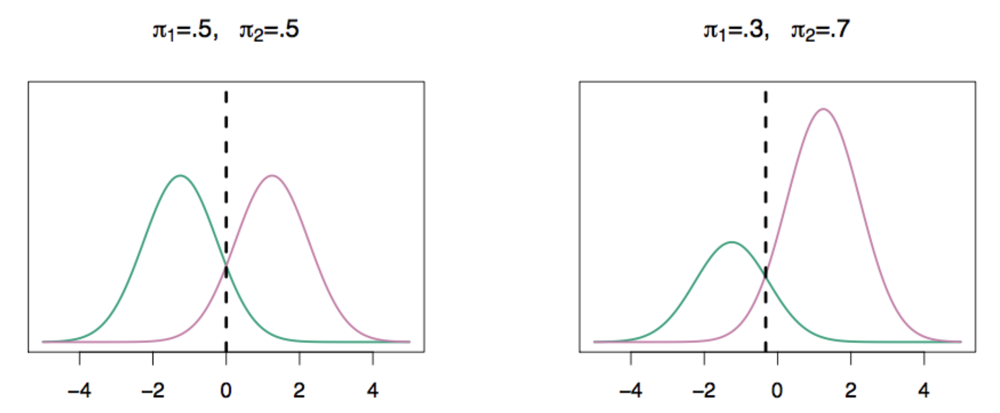
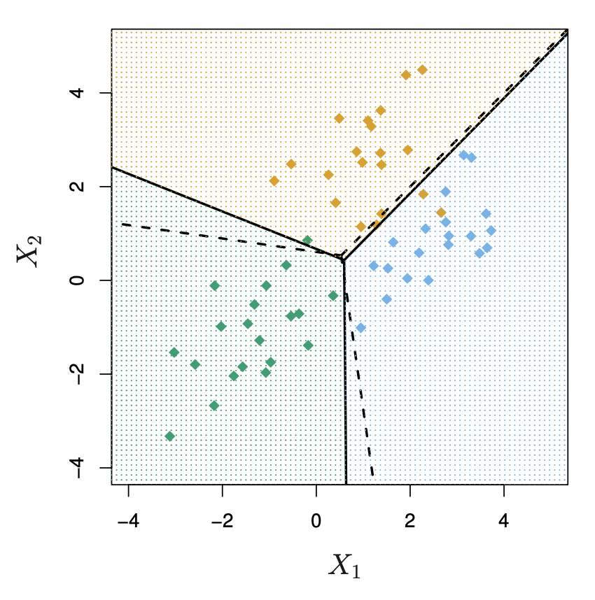
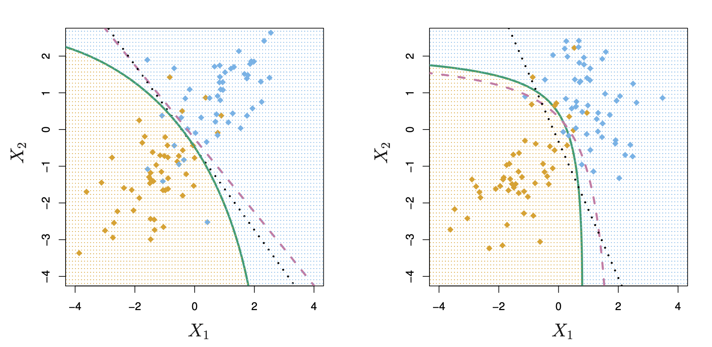

Week 6
In the last lecture, we have learned the logistic regression for binary classification \(Y\in\{0,1\}\).
\[ \mathbb P(Y=1\mid X=x)=\frac{e^{\beta_0+x^\top\beta}}{1+e^{\beta_0+x^\top\beta}}. \]
Recall our motivating example, where we are trying to predict the medical condition of a patient in the emergency room on the basis of her symptoms.
There are three possible diagnoses: stroke, drug overdose, and epileptic seizure.
We define \(Y\) as follows:
\[ Y = \begin{cases} 1 \quad \text{if stroke}; \\ 2 \quad \text{if drug overdose}; \\ 3 \quad \text{if epileptic seizure}. \end{cases} \]
How do we extend the ideas we discussed last week to the case where we have more than two classes?
When \(Y\in\{0,1,\ldots,K-1\}\) for \(K>2\), we need to estimate
\[p_k(x):=\mathbb P(Y=k\mid X=x),\qquad\forall\ 1\leq k\leq K-1.\]
Logistic regression assumes
\[ \begin{aligned} p_1(x)&=\frac{e^{\beta_0^{(1)}+x^\top\beta^{(1)}}}{1+\sum_{k=1}^{K-1}e^{\beta_0^{(k)}+x^\top\beta^{(k)}}}.\\ &\vdots\\ p_{K-1}(x)&=\frac{e^{\beta_0^{(K-1)}+x^\top\beta^{(K-1)}}}{1+\sum_{k=1}^{K-1}e^{\beta_0^{(k)}+x^\top\beta^{(k)}}} \end{aligned} \]
and \(p_0(x)=1-p_1(x)-\cdots-p_{K-1}(x)\).
So essentially, we select a single class (wlog, the Kth class) to serve as baseline.
Equivalently, for \(k = 1, ..., K-1\)
\[ \begin{aligned} \log\left(\frac{p_1(x)}{p_0(x)}\right)&=\beta_0^{(1)}+\beta_1^{(1)}x_1+\cdots+\beta_p^{(1)}x_p\\ \log\left(\frac{p_2(x)}{p_0(x)}\right)&=\beta_0^{(2)}+\beta_1^{(2)}x_1+\cdots+\beta_p^{(2)}x_p\\ &\vdots\\ \log\left(\frac{p_{K-1}(x)}{p_0(x)}\right)&=\beta_0^{(K-1)}+\beta_1^{(K-1)}x_1+\cdots+\beta_p^{(K-1)}x_p \end{aligned} \]
Choice of the baseline (\(Y=0\)) is arbitrary.
So classification can be done immediately once \(\beta^{(k)}\)’s are estimated.
When we fit models with different baselines (i.e. different \(Y=0\)), the coefficient estimates will differ.
However, the predictions, log odds between any pair of classes, and the other key model outputs will remain the same.
The interpretation of the coefficients must be done with care since the coefficients are tied to the choice of baseline.
Motivating Example: if we set epileptic seizure to be the baseline, then a one unit increase in \(x\) is associated with a \(\beta_0^{(1)}\) increase in the log odds of stroke over epileptic seizure.
A naive approach: separate binary logistic regressions
\[\log\left(\frac{p_k(x)}{p_0(x)}\right)=\beta_0^{(k)}+\beta_1^{(k)}x_1+\cdots+\beta_p^{(k)}x_p,\qquad\forall\ 1\leq k\leq K-1.\]
Partition the data into \(\{\mathcal D_{(1)}^{\mathrm{train}},\ldots,\mathcal D_{(K-1)}^{\mathrm{train}}\}\) with \(\mathcal D_{(k)}^{\mathrm{train}}\) containing all data with \(y\in\{0,k\}\) for \(1\leq k\leq K-1\).
1. For each \(1\leq k\leq K-1\), use \(\mathcal D_{(k)}^{\mathrm{train}}\) to perform binary logistic regression to estimate \(\beta^{(k)}\) and estimate \(\frac{p_k(x)}{p_0(x)}\)
2. Assign class label by comparing
\[1,\ \frac{p_1(x)}{p_0(x)},\ \frac{p_2(x)}{p_0(x)}\ldots,\ \frac{p_{K-1}(x)}{p_0(x)}\]
The conditional log-likelihood of \(y_1,\ldots,y_n\mid x_1,\ldots,x_n\) at \((\beta^{(1)},\ldots,\beta^{(K-1)})\), with no intercepts, is proportional to
\[ \begin{aligned} &\sum_{i=1}^n\log\left(\prod_{k=0}^{K-1}p_k(x_i)^{\mathbf 1\{y_i=k\}}\right)\\ &=\sum_{i=1}^n\sum_{k=0}^{K-1}\mathbf 1\{y_i=k\}\log(p_k(x_i))\\ &=\sum_{i=1}^n\left[\mathbf 1\{y_i=0\}\log(p_0(x_i))+\sum_{k=1}^{K-1}\mathbf 1\{y_i=k\}\log(p_k(x_i))\right]\\ &=\sum_{i=1}^n\left[\sum_{k=1}^{K-1}\mathbf 1\{y_i=k\}x_i^\top\beta^{(k)}-\sum_{k=0}^{K-1}\mathbf 1\{y_i=k\}\log\left(1+\sum_{k=1}^{K-1}e^{x_i^\top\beta^{(k)}}\right)\right]\\ &=\sum_{i=1}^n\left[\sum_{k=1}^{K-1}\mathbf 1\{y_i=k\}x_i^\top\beta^{(k)}-\log\left(1+\sum_{k=1}^{K-1}e^{x_i^\top\beta^{(k)}}\right)\right] \end{aligned} \]
For any \(1\leq k\leq K-1\),
\[ \begin{aligned} \frac{\partial\ell(\beta^{(1)},\ldots,\beta^{(K-1)})}{\partial\beta^{(k)}} &=\sum_{i=1}^n\left[\mathbf 1\{y_i=k\}x_i-\frac{x_i e^{x_i^\top\beta^{(k)}}}{1+\sum_{k=1}^{K-1}e^{x_i^\top\beta^{(k)}}}\right]\\ &=\sum_{i=1}^n\left[\mathbf 1\{y_i=k\}-\frac{e^{x_i^\top\beta^{(k)}}}{1+\sum_{k=1}^{K-1}e^{x_i^\top\beta^{(k)}}}\right]x_i \end{aligned} \]
The binary case (\(K=2\))
\[ \begin{aligned} \frac{\partial\ell(\beta)}{\partial\beta} &=\sum_{i=1}^n\left[\mathbf 1\{y_i=1\}-\frac{e^{x_i^\top\beta}}{1+e^{x_i^\top\beta}}\right]x_i\\ &=\sum_{i=1}^n\left[y_i-\frac{e^{x_i^\top\beta}}{1+e^{x_i^\top\beta}}\right]x_i. \end{aligned} \]
The log-likelihood we just showed is concave, thus, it’s negative is convex.
Therefore, for \(1\leq k\leq K\), we update
\[ \hat\beta_{(t+1)}^{(k)}=\hat\beta_{(t)}^{(k)}+\alpha\sum_{i=1}^n\left[\mathbf 1\{y_i=k\}-\frac{e^{x_i^\top\hat\beta_{(t)}^{(k)}}}{1+\sum_{k=1}^{K-1}e^{x_i^\top\hat\beta_{(t)}^{(k)}}}\right]x_i. \]
Remark:
Suppose we’re trying to classify whether a student is an undergraduate or graduate student based on their age.
Logistic regression: Given that a student is 25 years old, what is the probability that they’re a graduate student?
\[\mathbb P(Y=1\mid X= x)\] - We know the student’s age (\(X\)), we want to predict their student status (\(Y\))
Discriminant Analysis: What does the distribution of ages look like among undergraduate students? What about among graduate students?
\[X\mid Y=k,\qquad\forall k\in\mathcal C.\]
When we generalize the previous example:
\[\mathbb P(Y=k\mid X=\boldsymbol x),\qquad\forall k\in\mathcal C.\]
\[X\mid Y=k,\qquad\forall k\in\mathcal C.\]
What does parametrizing \(X\mid Y=k\) buy us?
\[\mathbb P(Y=k\mid X=\boldsymbol x)=\frac{\mathbb P(X=\boldsymbol x\mid Y=k)\mathbb P(Y=k)}{\mathbb P(X=\boldsymbol x)}.\]
\[ \begin{gathered} \mathbb P(Y=k\mid X=\boldsymbol x)\geq\mathbb P(Y=k'\mid X=\boldsymbol x)\\ \Longleftrightarrow\ \mathbb P(X=\boldsymbol x\mid Y=k)\mathbb P(Y=k)\geq\mathbb P(X=\boldsymbol x\mid Y=k')\mathbb P(Y=k') \end{gathered} \]
Suppose we have \(K\) classes, \(\mathcal C=\{0,1,2,\ldots,K-1\}\). For any \(k\in\mathcal C\),
\[\pi_k:=\mathbb P(Y=k)\]
as the prior probability that a randomly chosen observation comes from the \(k\)th class.
\[f_k(x):=\mathbb P(X=\boldsymbol x\mid Y=k)\]
as the conditional density function of \(X=x\) from class \(k\).
\[p_k(x):=\mathbb P(Y=k\mid X=\boldsymbol x)=\frac{\pi_k f_k(\boldsymbol x)}{\sum_{\ell\in\mathcal C}\pi_\ell f_\ell(\boldsymbol x)}\]
is called the posterior probability, i.e. the probability that an observation belongs to the \(k\)th class given its feature.
\[\mathop{\arg\max}_{k\in\mathcal C}p_k(\boldsymbol x)=\mathop{\arg\max}_{k\in\mathcal C}\frac{\pi_k f_k(\boldsymbol x)}{\sum_{\ell\in\mathcal C}\pi_\ell f_\ell(\boldsymbol x)}=\mathop{\arg\max}_{k\in\mathcal C}\pi_k f_k(\boldsymbol x).\]
Assume that
\[X\mid Y=k\sim N(\mu_k,\sigma_k^2),\qquad\forall k\in\mathcal C,\]
namely,
\[f_k(x)=\frac{1}{\sqrt{2\pi}\sigma_k}e^{-\frac{1}{2\sigma_k^2}(x-\mu_k)^2}.\]
Linear Discriminant Analysis (LDA) further assumes
\[\sigma_0^2=\sigma_1^2=\cdots=\sigma_{K-1}^2=\sigma^2.\]
As a result,
\[p_k(x)=\frac{\pi_k f_k(x)}{\sum_{\ell\in\mathcal C}\pi_\ell f_\ell(x)}=\frac{\pi_k e^{-\frac{1}{2\sigma^2}(x-\mu_k)^2}}{\sum_{\ell\in\mathcal C}\pi_\ell e^{-\frac{1}{2\sigma^2}(x-\mu_\ell)^2}}.\]
The Bayes rule classifies \(X=x\) to
\[ \begin{aligned} \mathop{\arg\max}_{k\in\mathcal C} p_k(x)&=\mathop{\arg\max}_{k\in\mathcal C}\log(p_k(x))\\ &=\mathop{\arg\max}_{k\in\mathcal C}\underbrace{\frac{\mu_k}{\sigma^2}x-\frac{\mu_k^2}{2\sigma^2}+\log\pi_k}_{\delta_k(x)}\qquad\text{(verify!)} \end{aligned} \]
The name LDA is due to the fact that the discriminant function \(\delta_k(x)\) is a linear function in \(x\).
As an example, let \(K=2\):
\[\mathop{\arg\max}_{k\in\{0,1\}} p_k(x)=\mathop{\arg\max}_{k\in\{0,1\}}\left[\frac{\mu_k}{\sigma^2}x-\frac{\mu_k^2}{2\sigma^2}+\log\pi_k\right]\]
In this example, let’s also allow the priors are equal \(\pi_0=\pi_1\) and suppose \(\mu_1\geq\mu_0\).
Then the Bayes classifier assigns \(X=x\) to
\[\begin{cases}0&\text{if }x<\frac{\mu_0+\mu_1}{2}\\1&\text{if }x\geq\frac{\mu_0+\mu_1}{2}\end{cases}\]
The line \(x=(\mu_0+\mu_1)/2\) is called the Bayes decision boundary.
Consider \(\mu_0=-1.5\), \(\mu_1=1.5\), and \(\sigma=1\). The curves are \(p_0(x)\) (green) and \(p_1(x)\) (red). The dashed vertical lines are the Bayes decision boundary.
\[f^*(x)=\begin{cases}0&\text{if }x<\frac{\mu_0+\mu_1}{2}=0\\1&\text{if }x\geq\frac{\mu_0+\mu_1}{2}=0\end{cases}\]

If we know \(\mu_0,\ldots,\mu_{K-1}\), \(\sigma^2\) and \(\pi_0,\ldots,\pi_{K-1}\), then we can construct the Bayes rule
\[\mathop{\arg\max}_{k\in\mathcal C}\delta_k(x)=\mathop{\arg\max}_{k\in\mathcal C}\left\{\frac{\mu_k}{\sigma^2}x-\frac{\mu_k^2}{2\sigma^2}+\log\pi_k\right\}.\]
However, we typically don’t know these parameters. We need to use the training data to estimate them!
Given training data \((x_1,y_1),\ldots,(x_n,y_n)\), for all \(k\in\mathcal C\),
We have
\[n_k=\sum_{i=1}^n\mathbf 1\{y_i=k\}.\]
We estimate \(\pi_k\) by \(\hat\pi_k=\frac{n_k}{n}.\)
We estimate \(\mu_k\) and \(\sigma^2\) by
\[\begin{aligned}\hat\mu_k&=\frac{1}{n_k}\sum_{1\leq i\leq n:y_i=k}x_i\\\hat\sigma^2&=\frac{1}{n}\sum_{k=1}^K\sum_{1\leq i\leq n:y_i=k}(x_i-\hat\mu_k)^2.\end{aligned}\]
We estimate \(\delta_k(x)\) by the plug-in estimator
\[\hat\delta_k(x)=\frac{\hat\mu_k}{\hat\sigma^2}x-\frac{\hat\mu_k^2}{2\hat\sigma^2}+\log\hat\pi_k.\]
The LDA classifier assigns \(x\) to
\[\mathop{\arg\max}_{k\in\mathcal C}\hat\delta_k(x).\]
How about the case when \(p>1\)?
Recall that the posterior probability has the form
\[\mathbb P(Y=k\mid X=x)=\frac{\pi_k f_k(x)}{\sum_{\ell\in\mathcal C}\pi_\ell f_\ell(x)},\]
Now, we assume
\[X\mid Y=k\sim N_p(\mu_k,\Sigma),\qquad\forall k\in\mathcal C,\]
that is,
\[f_k(x)=\frac{1}{(2\pi)^{p/2}|\Sigma|^{1/2}}e^{-\frac12(x-\mu_k)^\top\Sigma^{-1}(x-\mu_k)}.\]
The discriminant function becomes
\[\delta_k(x)=x^\top\Sigma^{-1}\mu_k-\frac12\mu_k^\top\Sigma^{-1}\mu_k+\log\pi_k\]
compared to the univariate case
\[\delta_k(x)=\frac{\mu_k}{\sigma^2}x-\frac{\mu_k^2}{2\sigma^2}+\log\pi_k.\]
The Bayes decision boundaries are the set of \(x\) for which
\[\delta_k(x)=\delta_\ell(x),\qquad\forall k\neq\ell,\]
which are again affine hyperplanes in \(\mathbb R^p\).

There are three classes (orange, green and blue) with two features \(X_1\) and \(X_2\). Dashed lines are the Bayes decision boundaries. Solid lines are their estimates based on the LDA.
Given the training data \((x_1,y_1),\ldots,(x_n,y_n)\), for any \(k\in\mathcal C\),
We have
\[n_k=\sum_{i=1}^n\mathbf 1\{y_i=k\}.\]
We estimate \(\pi_k\) by \(\hat\pi_k=\frac{n_k}{n}.\)
The slight difference is to estimate \(\mu_k\) and \(\Sigma\) by
\[\begin{aligned}\hat\mu_k&=\frac{1}{n_k}\sum_{1\leq i\leq n:y_i=k}x_i\\\hat\Sigma&=\frac{1}{n}\sum_{k=1}^K\sum_{1\leq i\leq n:y_i=k}(x_i-\hat\mu_k)(x_i-\hat\mu_k)^\top.\end{aligned}\]
We use the plugin estimator
\[\hat\delta_k(x)=x^\top\hat\Sigma^{-1}\hat\mu_k-\frac12\hat\mu_k^\top\hat\Sigma^{-1}\hat\mu_k+\log\hat\pi_k,\qquad\forall k\in\mathcal C.\]
The resulting LDA classifier is
\[\mathop{\arg\max}_{k\in\mathcal C}\hat\delta_k(x).\]
One can also estimate \(p_k(x)\) for each \(k\in\mathcal C\) (using Bayes theorem as we discussed earlier in the lecture - verify!).
For binary classification of LDA , one can show that
\[\begin{aligned}\log\left(\frac{p_1(x)}{1-p_1(x)}\right)&=\log\left(\frac{p_1(x)}{p_0(x)}\right)\\&=c_0+c_1x_1+\cdots+c_px_p,\end{aligned}\]
where the \(c_0,c_1,\ldots,c_p\) depends on \(\pi_0,\pi_1,\mu_0,\mu_1\) and \(\Sigma\).
The log-odds under LDA is also a linear form in both the parameters and the features.
The parameters are estimated differently.
LDA specifies
\[X\mid Y=k\sim N(\mu_k,\Sigma),\qquad\forall k\in\mathcal C.\]
Other discriminant analyses change the specifications for \(X\mid Y=k\).
Quadratic discriminant analysis (QDA) assumes
\[X\mid Y=k\sim N(\mu_k,\Sigma_k),\qquad\forall k\in\mathcal C,\]
by allowing different \(\Sigma_k\) across all classes.
Assume that
\[X\mid Y=k\sim N(\mu_k,\sigma_k^2),\qquad\forall k\in\mathcal C,\]
namely,
\[f_k(x)=\frac{1}{\sqrt{2\pi}\sigma_k}e^{-\frac{1}{2\sigma_k^2}(x-\mu_k)^2}.\]
As a result,
\[p_k(x)=\frac{\pi_k f_k(x)}{\sum_{\ell\in\mathcal C}\pi_\ell f_\ell(x)}=\frac{\frac{\pi_k}{\sigma_k}e^{-\frac{1}{2\sigma_k^2}(x-\mu_k)^2}}{\sum_{\ell\in\mathcal C}\frac{\pi_\ell}{\sigma_\ell}e^{-\frac{1}{2\sigma_\ell^2}(x-\mu_\ell)^2}}.\]
The Bayes rule classifies \(X=x\) to
\[ \begin{aligned} \mathop{\arg\max}_{k\in\mathcal C}p_k(x)&=\mathop{\arg\max}_{k\in\mathcal C}\log(p_k(x))\\ &=\mathop{\arg\max}_{k\in\mathcal C}\log\left[\frac{\pi_k}{\sigma_k}e^{-\frac{1}{2\sigma_k^2}(x-\mu_k)^2}\right]\\ &=\mathop{\arg\max}_{k\in\mathcal C}\underbrace{-\frac{x^2}{2\sigma_k^2}+\frac{\mu_k}{\sigma_k^2}x-\frac{\mu_k^2}{2\sigma_k^2}+\log\pi_k-\log(\sigma_k)}_{\delta_k(x)} \end{aligned} \]
The name QDA is due to the fact that \(\delta_k(x)\) is quadratic in \(x\).
\[X\mid Y=k\sim N_p(\mu_k,\Sigma_k)\]
The discriminant function becomes
\[ \begin{aligned} \delta_k(x)&=\log\left[\frac{\pi_k}{|\Sigma_k|^{1/2}}e^{-\frac12(x-\mu_k)^\top\Sigma_k^{-1}(x-\mu_k)}\right]\\ &=x^\top\Sigma_k^{-1}\mu_k-\frac12\mu_k^\top\Sigma_k^{-1}\mu_k+\log\pi_k-\frac12x^\top\Sigma_k^{-1}x-\frac12\log|\Sigma_k|. \end{aligned} \]
The decision boundary between any class \(k\) and class \(\ell\)
\[\{x\in\mathbb R^p:\delta_k(x)=\delta_\ell(x)\}\]
is quadratic in \(x\)

Decision boundaries of the Bayes classifier (purple dashed), LDA (black dotted), and QDA (green solid) in two scenarios.
Given training data \((x_1,y_1),\ldots,(x_n,y_n)\), for any \(k\in\mathcal C\),
We have
\[n_k=\sum_{i=1}^n\mathbf 1\{y_i=k\}.\]
We estimate \(\pi_k\) by \(\hat\pi_k=\frac{n_k}{n}.\)
We estimate \(\mu_k\) and \(\Sigma_k\) by
\[\begin{aligned}\hat\mu_k&=\frac{1}{n_k}\sum_{1\leq i\leq n:y_i=k}x_i\\\hat\Sigma_k&=\frac{1}{n_k}\sum_{1\leq i\leq n:y_i=k}(x_i-\hat\mu_k)(x_i-\hat\mu_k)^\top.\end{aligned}\]
Plugin estimator for \(\delta(x)\).
LDA: we have
\[(K-1)+pK+\frac{p(p+1)}{2}\]
number of parameters to estimate.
QDA: we have
\[(K-1)+pK+\frac{p(p+1)}{2}K\]
number of parameters to estimate.
The estimation error is large when \(p\) is large comparing to \(n\).
Other discriminant analyses: different density of \(X\mid Y=k\), including non-parametric approaches.
Instead of assuming the \(X\mid Y=k\) follow a family of particular distributions, Naive Bayes assumes
\[X_1,\ldots,X_p\text{ are independent given }Y=k\]
so that
\[f_k(x)=\prod_{j=1}^p f_{k,j}(x_j)\]
It is easy to deal with both quantitative and categorical features.
Despite the strong independence assumption within class, naive Bayes often produces good classification results.
For Gaussian density
\[X_j\mid Y=k\sim N(\mu_{k,j},\sigma_{k,j}^2),\]
this means that \(\Sigma_k=\operatorname{diag}(\sigma_{k,1}^2,\sigma_{k,2}^2,\ldots,\sigma_{k,p}^2)\) and
\[f_k(x)=\prod_{j=1}^p\frac{1}{\sigma_{k,j}\sqrt{2\pi}}e^{-\frac{1}{2\sigma_{k,j}^2}(x_j-\mu_{k,j})^2}\]
The discriminant function is
\[\delta_k(x)=-\frac12\sum_{j=1}^p\frac{(x_j-\mu_{kj})^2}{\sigma_{kj}^2}+\log\pi_k-\frac12\sum_{j=1}^p\log\sigma_{kj}^2.\]
Multiclass logistic regression extends binary logistic regression by modelling the log-odds of each class relative to a chosen baseline class.
Discriminant analysis takes a different approach: instead of modelling \(Y \mid X\) directly, it models the distribution of \(X \mid Y=k\) and then uses Bayes’ theorem for classification.
LDA assumes the classes have different means but share the same covariance matrix, leading to linear decision boundaries.
QDA allows each class to have its own covariance matrix, giving more flexibility and quadratic decision boundaries.
Naive Bayes simplifies the modelling of \(X\mid Y\) by assuming the predictors are conditionally independent within each class.
The best classification method depends on the structure of the data and the assumptions we are willing to make.
Next Class: Tree based methods